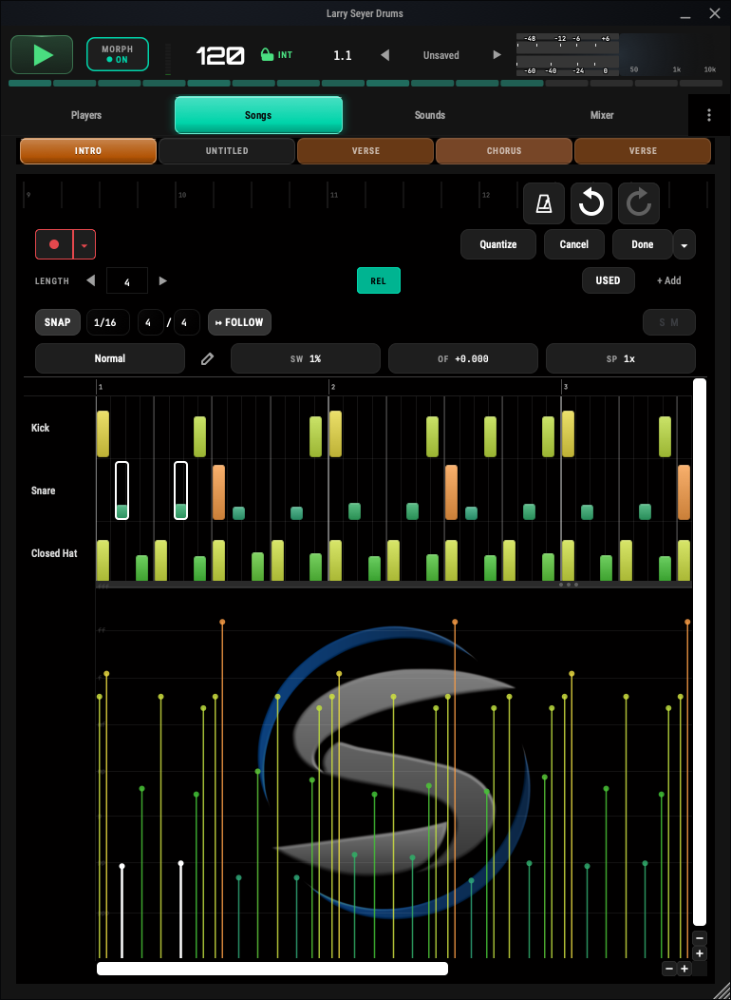

← All chapters · Larry Seyer Drums
Chapter 07 · Beta tester guide
The Pattern Editor
Temporary quick-start for TestFlight testers until the tutorial videos are ready.
Opening a pill and making a change
Open the Pattern Editor by double-tapping a pill or a phrase tab, or with Command+P.
The editor works on a private copy:
- Done keeps the edits in the Song.
- Save (the Song) makes them permanent.
- Cancel backs out.
Those three are separate on purpose. Done is not the same as Save.
The header stays live, so you can hop between sections from inside the editor. The grid is the pattern: tap to add or remove a hit. With a mouse, a click selects and a second click removes.
If the transport is stopped, you hear an audition of what you just did. If it’s playing, the loop plays your edit.
You can zoom with pinch, Command+wheel, or the − / + buttons, and fit the pattern to the width. Follow keeps the view with the playhead. The Tab key hides and shows the editor.
A good first edit: add a few ghost notes to the snare on Pretty Shuffle’s Verse.

Rows, velocity and feel
Used and All views group rows as Kick, Snare, Hats, Toms, Cymbals and Other. You can add a drum with +. An amber articulation dot marks extra detail, and “N notes not shown” tells you when something is hidden.
Tapping a row name cycles mute and solo. S then M clears them all. Silenced hits turn grey. A row mute or solo also covers fills. Press and hold a row name twice for Remove from pattern and Reassign to… — a useful trick is to solo the hat, then reassign it to the ride.
The velocity lane can be resized from its grab bar. Press and hold a row name to select a whole drum. Box-select by holding on an empty spot and dragging. You can delete, copy to the next bar, or deselect. Velocity dragging has REL and ABS modes; REL keeps a ceiling so your ghost notes can stay ghost notes while you lift the kicks a little.
Each pill also has a Feel row: Energy (with a pencil into the Energy Profile editor), Swing 0–100%, Offset (rush or drag), and Speed from 1/4x to 4x. On a narrow screen these fold into chips.
Snap sets the grid resolution. Quantize (Command+Option+Q) can do selected notes or the whole pill, with Grid, Strength, Swing and Catch. It moves timing only, not velocity.
A few of the new quantize tools are still under my A/B listening, so if something about quantize feels off, please tell me.
Time signature is 1–15 over 2, 4, 8 or 16. Changing the numerator re-counts the pill. Length can be 1 to 256 measures. There’s also Regrid to Triplet.
Recording into a pill
You can play a part in from a kit, pads or a keyboard.
Set this up first: MIDI input switched on for the port, the player’s channel, and Input layout (GM, EX or E-Kit). Then press Record (R) to arm the open pill. You’ll see a counter, a red outline, and four settings: Count-in (0 or 1 bar), Input layout, Record From (All Channels or 1–16), and Play Quantized.
Takes add pass after pass while the pill loops. On an overdub, the louder hit is kept. Play Quantized lays the grid over your timing.
Undo a take is different from Cancel on the editor. Done keeps the take in the Song; Save makes it permanent.
On iPhone you’ll need a MIDI keyboard or pads. Recording from the iOS app while it’s attached to an AUv3 is still being retested, so if that path misbehaves, I want to hear about it.
Saving a pattern or a new style
The Done menu offers Save as New Pattern… and Save as New Style…. You can also use Pattern Presets → New or Save As.
A new style is generated with an Intro, Chorus, Bridge and fills from your Verse. The song has to be stopped for that save. There’s more on generation in the next chapter.
Previous: Songs: Arranging · Index · Next: Bringing in Grooves